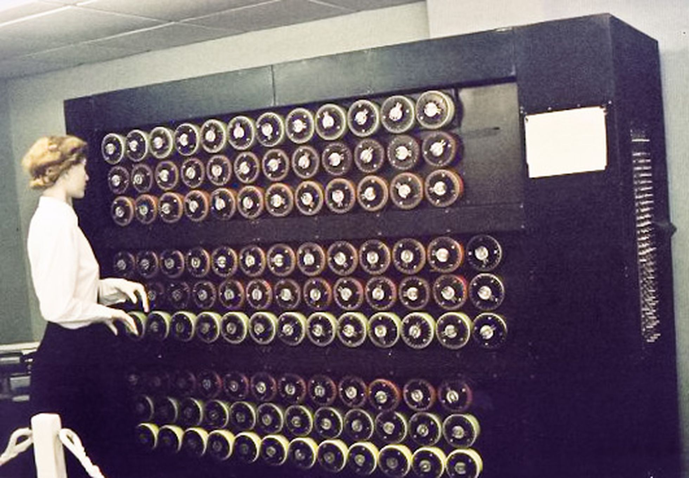

La pelicula "El Código Enigma" relata la historia de un matemático, Alan Turning, el cual se encuentra en medio de la segunda guerra mundial. La narrativa está enfocada en como el junto a sus colegas, logran derrotar a los nazis, quienes utilizaban una encriptación especial para comunicarse entre sí, y cumplir sus objetivos.
Alan Turning, tuvo al principio una idea diferente a la de sus colegas. Al principio no tenían fe en él, pero una vez pudo probar lo que estaba intentando lograr. Todos se dieron cuenta de que su manera, era de hecho ingenieosa, y demasiado increíble así que se pusieron a trabajar y lograron derrotar a la maquína conocida como "Enigma"
La película talentos ocultos es un largometraje que muestra la vida de una mujer negra viviendo en la peor etapa de los Estados Unidos. No solo el machismo dominada a los Estados Unidos en esta época, sino el racimo. Y esta mujer cumplía con las dos
Esta mujer, llamada "Katherine Johnson" jugó un papel importante en varios proyectos de la NASA, a pesar de ser excluída por toda la sociedad. En su trabajo, ella no podía acercarse a los colegas blancos, no podía usar los mismos baños que ellos y muchas veces, dichos colegas, se llevaban el crédito de las cosas que ella y su equipo lograban
Fue gracias al presidente "Lyndon B. Jhonson" que las cosas empezaron a cambiar y las vidas, el reconocimiento y los logros de estas mujeres llegaron a ser conocidos por la sociedad. Y empezar a notar que no importa la raza, el color ni el sexo. Cada uno de nosotros tiene un potencial y lo mejor es aprovecharlo.
Estas personas fueron sin duda icónicas, no solo para el avance de la tecnología pero también para mejorar las condiciones de vida de algunas personas que vivían encasilladas, ignoradas y reprimidas por la misma sociedad.
En cuanto a Alan Turning, considero que su aporte fue muy importante para estar un paso adelante en la guerra contra los Nazis. Su ingenio ayudó a salvar una cantidad incontables de vida, y dio el paso para las primeras computadoras. Es decir, este hombre no solo ayudó a la tecnología, pero ayudó a que muchas personas pudieran seguir con sus vidas, cuando lo más probable es que sin esta máquina no habrían vivido para contar la historia.
Por otro lado, Katherine Jonhson, una mujer reprimida por la sociedad. Puro lograr lo que nadie había podido. Sus habilidades matemáticas hicieron posible que la múltiples naves tuvieran un aterrizaje éxitoso. Katherine, es una figura que inspira a las demás mujeres a no quedarse calladas y luchar por sus derechos, que muchas veces se veían reprimidos por el tipo de sociedad y educación. Una mujer luchadora, inteligente logrando cosas que nadie creía posibles de lograr
Muchas veces los potenciales personales se ven reprimidos por falta de autoestima, críticas por lo que los demás piensan, podemos ver que cosas que al principio no parecen tan significantes pueden desencadenar invenciones que ni siquiera son consideradas a la hora de hacer la creación. Considero que el logro de Alan Turning, de hacer una máquina capaz de vencer a Enigma, hizo mucho más por las invenciones que más adelante se ven, invenciones que ahora mismo poseemos en nuestras manos. Las computadoras básicamente tiene como origen esta invención, y es muy probable que si no hubiése sido por Alan Turning, Katherine Johnson no hubiera podido encontrar la trayectoria de las naves espaciales y lograr así lo que hy en día conocemos como hazañas legendarias.
Esto por lo menos a mí me lleva a pensar en todas las capacidades que tengo, en todo lo que puedo lograr, y mucho más ahora que no hay limitaciones como estas personas las tuvieron. Me motiva y me lleva a pensar en qué cosas estoy verdaderamente limitandome a aprender más. Las notas, en cuanto a la carrera no son de las cosas que me llevan. Mi verdadero limitante está en la cantidad de cosas que se puedden lograr. Me abruma bastante. Pero usando el ejemplo de estas personas, pensando en lograr lo inimaginable, son ejemplo a seguir para que yo también pueda alguna vez lograr una hazaña como esas
(1). Joanna Goodrich - Katherine Johnson, the Hidden Figures Mathematician Who Got Astronaut John Glenn Into Space. https://spectrum.ieee.org/katherine-johnson-the-hidden-figures-mathematician-who-got-astronaut-john-glenn-into-space
(2). Margot Lee Shetterly - Katherine Johnson Biography. https://www.nasa.gov/content/katherine-johnson-biography
(3). Britannica - The Turing machine. https://www.britannica.com/technology/computer/The-Turing-machine